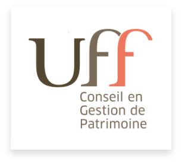
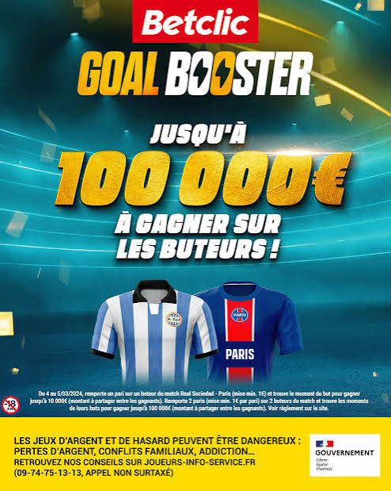
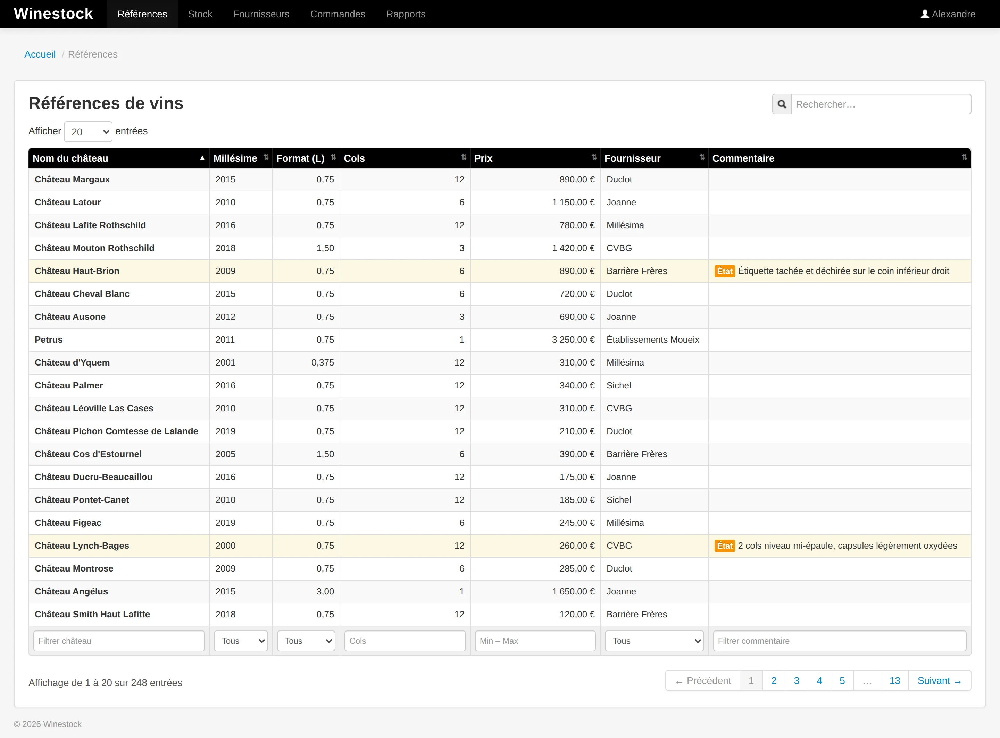

Construire un produit de bout en bout
De l'architecture au déploiement cloud, en passant par le pilotage produit et les arbitrages techniques.
Ouvert à de nouvelles missions · Bordeaux
> Lead Dev Fullstack Senior
Dev Senior Fullstack Java / Spring / Angular · 15 ans d’expérience. J'interviens depuis 2023 sous ma propre structure EgoTech en mission chez des startups comme des grands comptes du secteur bancaire.
Ils m'ont fait confiance


01 · À propos
Développeur senior fullstack avec 15 ans d'expérience, j'interviens depuis 2023 sous ma propre structure EgoTech en mission chez des startups comme des grands comptes du secteur bancaire.
Mon parcours m'a fait passer par tous les rôles : développeur en SSII, tech lead en e-commerce, CTO de startup, co-fondateur d'un SaaS B2B que j'ai construit de zéro (Bary, 50+ clients payants dans le transport routier), puis directeur technique en ESN et lead dev senior chez des clients comme BNP Paribas ou l'UFF.
02 · Compétences
De l'architecture au déploiement cloud, en passant par le pilotage produit et les arbitrages techniques.
Recrutement, mentoring de juniors et de profils intermédiaires, accompagnement à la montée en compétences.
Cadrage des besoins, priorisation, chiffrage, soutien à l'avant-vente.
// stack de prédilection Java, Spring Boot, Angular, architectures hexagonales et microservices, CI/CD GitLab/Jenkins, Cloud Google et AWS.
03 · Parcours
EgoTech est ma structure de prestation, sous laquelle j'opère mes missions de développement et de lead technique chez mes clients (UFF, BNP Paribas, Aubay).
C'est aussi mon espace d'exploration technique. J'y consacre du temps à la veille et à l'expérimentation sur les sujets qui me semblent structurants pour les années à venir :


Lead Dev Fullstack Senior sur deux produits stratégiques de l'UFF : un outil de suivi des actes et un nouvel espace client. Les deux projets ont été démarrés depuis un dépôt Git vide (ossature technique uniquement), et sont aujourd'hui en production.
Mission réalisée via Aubay dans le cadre de mon activité EgoTech.
Au sein de l'équipe de direction de l'agence Bordelaise d'Aubay (30+ développeurs), j'assure un rôle de directeur technique externe, sur les volets avant-vente, recrutement, encadrement technique et accompagnement des consultants.

Mission au sein de la tribe Auto de BNP Paribas Personal Finance, en charge de cinq applications dédiées à la prise de lead dans le crédit automobile.
Mission réalisée via Aubay dans le cadre de mon activité EgoTech.
Contexte grand compte bancaire avec ses contraintes propres (sécurité, conformité, intégration au SI existant).


Deux missions successives de trois mois au sein du périmètre Engagement & Gamification de Betclic, dans un environnement tech reconnu pour son niveau d'exigence et sa modernité.
Mission réalisée via Ippon dans le cadre de mon activité EgoTech.
Développement backend sur les services de gamification de la plateforme. Environnement microservices sur AWS, communication événementielle via Pub/Sub, architecture hexagonale, bases de données dédiées par service, équipes pleinement autonomes côté DevOps (staging, recette, preprod, production).
Développement Angular dans le cadre de la refonte technique d'un back-office métier.
Une expérience riche techniquement et humainement, qui m'a permis de me remettre à niveau sur les pratiques industrialisées des grandes structures tech : tests automatisés à tous les niveaux, revues de code rigoureuses, pipeline CI/CD mature, autonomie d'équipe sur le delivery de bout en bout.

Lumm proposait un service digital de bien-être mental pour les collaborateurs en entreprise, combinant des parcours thérapeutiques personnalisés, des consultations en visio avec des thérapeutes et des outils digitaux d'accompagnement.

Bary est une plateforme SaaS B2B qui digitalise la relation commerciale entre transporteurs routiers et leurs clients : visibilité commerciale en ligne, prise de commande, paiement, facturation, automatisation des tâches administratives.
J'ai co-fondé l'entreprise et porté l'ensemble du volet technique, du premier commit jusqu'à l'exploitation de la plateforme en production avec plus de 50 clients payants.


Mission de conseil chez Orange Applications for Business sur le produit Contact Everyone, plateforme de communication multicanale B2B.
Intégration au sein d'une équipe d'une dizaine de personnes, autonome et expérimentée, sur une stack technique moderne et industrialisée pour l'époque.
Tests unitaires et d'intégration systématiques, tests frontend automatisés, DDD, code review en triple relecture, environnement dockerisé, communication asynchrone via RabbitMQ.

Responsable de l'ensemble des projets informatiques de l'entreprise, en autonomie sur la conception, le développement et la livraison d'applications internes au service des équipes commerciales, logistiques et financières.
Spécification et commande du serveur d'hébergement, installation Debian, mise en place d'une chaîne CI/CD Jenkins maison avec Sonar pour la qualité, connexions aux prestataires externes (échanges de fichiers, appels web automatisés).
Encadrement d'un développeur freelance sur une mission ponctuelle et de deux stagiaires : cadrage des sujets, suivi des livrables, code review.
Analyse des besoins métiers, priorisation et chiffrage des solutions en lien direct avec la direction.

Leadership technique au sein d'une équipe de 10 personnes (scrum master, product owner, développeurs) en charge des solutions e-commerce alimentaires du Groupe Casino, plateformes opérées par Cdiscount.
Travail sur une stack technique de 10 ans (Java 1.4), sans support éditeur et avec très peu de documentation disponible en ligne. Cet environnement contraint a été l'occasion de pousser des pratiques modernes là où c'était possible : mise en place de tests automatisés malgré la pauvreté de l'outillage, résolution de problèmes techniques en autonomie, mobilisation de l'équipe autour de l'agilité pour absorber les difficultés organisationnelles.
Ma première vraie expérience de leadership technique, dans un contexte compliqué qui m'a appris à porter une équipe dans la durée.
Et au-delà du contexte technique : dix ans plus tard, je suis toujours en relation avec des membres de l'équipe alors que nos chemins se sont séparés. C'est ce qui arrive parfois quand on traverse les difficultés ensemble.

Quatre années chez SQLI sur des missions techniques variées, avec une montée en responsabilités progressive jusqu'au rôle de Tech Lead.
Passage du rôle d'ingénieur en conception et développement à celui de Tech Lead sur la mission Casinodrive : prise en charge des sujets techniques les plus complexes, accompagnement de l'équipe dans un contexte mouvant (turnover, contraintes techno, blocages fonctionnels), participation aux décisions techniques et organisationnelles.
Quatre ans dans la même ESN à enchaîner des contextes très différents, ce qui m'a appris à m'adapter rapidement à des stacks nouvelles et à des cultures d'équipe variées. La diversité des environnements (Alfresco, Liferay, Play Framework, SAP Netweaver) m'a donné une plasticité technique qui me sert encore aujourd'hui.
Apprentissage de deux ans réalisé en parallèle de mon Master MIAGE, sur des projets pour le secteur de la surveillance autoroutière.
Conception et développement d'une solution navigateur pour la consultation en direct des flux vidéo des caméras de surveillance autoroutière.
Conception et développement d'une application PHP pour l'affichage des mêmes flux vidéo sur un mur d'écrans, à destination des centres d'exploitation.
04 · Réalisations

Jeu développé au sein du périmètre Engagement & Gamification : le joueur sélectionne ses buteurs, choisit sa mise et devine le moment de leur but pour décrocher jusqu'à 100 000 € en plus de ses gains.
Voir la vidéo de présentation
Plateforme SaaS de bien-être mental des collaborateurs. Livraison de la V1 en 2 mois, système de crédits d'utilisation, "boîte à outils" pour les thérapeutes.

SaaS B2B pour les transporteurs routiers, construit du premier commit à la production. Plateforme portée à 50+ clients payants.

Agrégation en temps réel des stocks internes et fournisseurs depuis des sources hétérogènes, exposés via une recherche fulltext ultra-rapide reposant sur Elasticsearch.

Sites e-commerce alimentaires du Groupe Casino, application des bornes en magasin et webservices de l'application mobile MCasino.

Solutions e-commerce alimentaires opérées par Cdiscount pour le Groupe Casino.

Refonte technique complète du site de la Ville de Bordeaux, au sein d'une équipe de 4 personnes.

Application interne dédiée au service achat pour la gestion des campagnes commerciales nationales, en équipe de 7.

Interventions sur la plateforme du client.

Solution navigateur pour la consultation en direct des flux vidéo des caméras de surveillance autoroutière, puis affichage sur un mur d'écrans.
05 · Formation
2008 — 2011
Université de Bordeaux
Méthodes informatiques appliquées à la gestion, spécialité Systèmes d'Information des Entreprises. En parallèle : projets pour Jumbo, la junior entreprise de la MIAGE, et apprentissage chez Adacis.
2006 — 2008
Université de Bordeaux · IUT Informatique
2006
Lycée Camille-Jullian, Bordeaux
2008
En 2008, j'ai créé une équipe pour le challenge des IUT Informatique de France et nous sommes partis à Maubeuge pour remporter la compétition : 24 h non stop, 3 épreuves de 8 h — programmation de robots dans un jeu en réseau, développement d'un site web sécurisé sans aide, et hacking.


06 · Recommandations
J'ai travaillé avec Alexandre sur un projet legacy et à l'environnement technique difficile. Particulièrement persévérant face aux problèmes complexes, Alexandre s'interroge sur les meilleures pratiques et sait se remettre en question face à de nouvelles propositions. Ajoutez à ça une dose de bonne humeur, et vous comprendrez que j'ai trouvé en Alexandre un collègue sympa et efficace !
 Olivier CroisierSenior fullstack developer, Java expert & trainer, speaker
Olivier CroisierSenior fullstack developer, Java expert & trainer, speaker
Travailler avec Alexandre est un vrai bonheur. C’est un développeur complet, aux multiples compétences évidemment mais c’est aussi et surtout un partenaire précieux qui sait s’imprégner de toutes les problématiques d’une entreprise et y apporter un esprit critique constructif et utile à tous. Son engagement sans faille et sa capacité d’adaptation en font pour moi un atout indéniable pour des structures en phase de développement.

 Julien Alart & Alexis BarthélemyCo-Founders @Lumm
Julien Alart & Alexis BarthélemyCo-Founders @Lumm
07 · Contact
Je suis ouvert à toute mission qui correspond à mes compétences, que ce soit en développement, en lead technique ou en accompagnement produit / projet / startup.
{kind=link}
{kind=link}